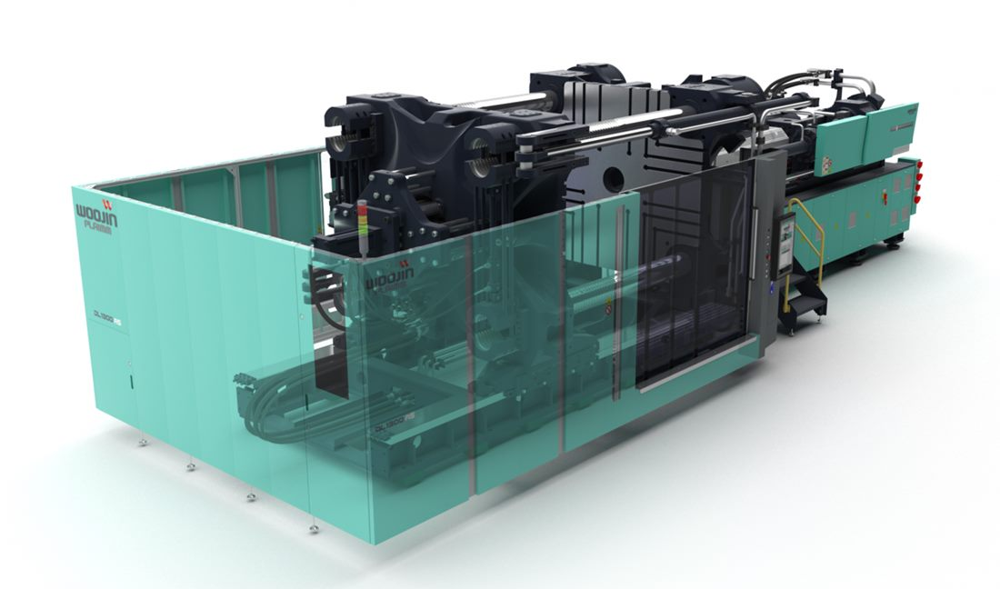

Zespół zamykający
01Dynamiczna i wydajna jednostka zamykania
- Szybki i bezpośredni układ zamykania na kolumnach (Direct-Lock).
02Niezależność i precyzja produkcji
- Siłowniki szybkiego ruchu.
- Dwupłytowa, zwarta konstrukcja.
- Doskonały rozkład naprężeń w płytach.
- Cztery niezależne czujniki pozycji kolumn.
03Wybrane funkcje podstawowe
- 5 etapów kontroli prędkości otwierania i zamykania formy wtryskowej.
- 5 etapów kontroli ciśnienia otwierania i zamykania formy wtryskowej.
- 3 etapy kontroli ciśnienia i prędkości ruchów wyrzutnika.
- Powiększona przestrzeń międzykolumnowa.
- Listwa bezpieczeństwa osłony po stronie operatora.
- Kurtyna świetlna osłony po stronie operatora.